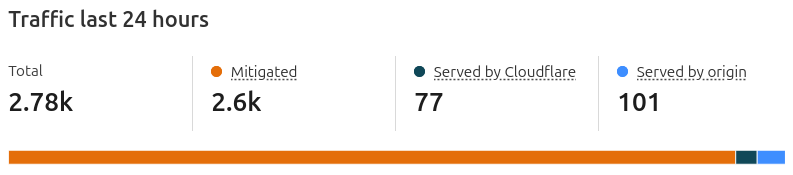
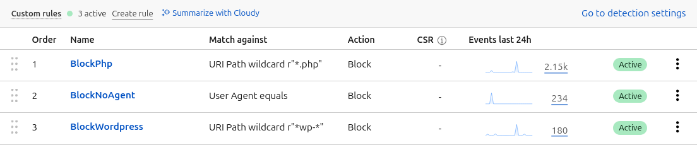

My hosting setup
2025-04-30This is a short(ish) blog post about how I secure my server and VPS to host websites without a static IP or port forwarding. I make use of Tailscale and SSH to manage them, and Cloudflare Tunnels to share specific services publicly.
Programming is my job but managing and securing servers isn't, so take everything here with a pinch of salt.
Ubuntu Server
My home server and my VPS both run Ubuntu Server 24.04. I've found it to be reliable and reasonably easy to use, with drivers for every bit of hardware I've thrown at it.
History
I've been using Ubuntu Server since building my first home server with my dad in 2011; with a (wonderfully cheap) dual-core AMD Athlon II 255 X2 and 2GB of RAM.
Learning to manage my server through SSH rather than using a desktop environment took a while to adapt to, but having some familiarity with the terminal has definitely paid off over the years - especially since I started working as a software developer.
Static IPs aren't very common for UK ISPs, so from 2015 I was using DuckDNS for dynamic DNS. The downside with DuckDNS was that if my IP changed it'd take 5 minutes for the DNS record to update, and I was only able to point subdomains at my *.duckdns.org domains, as I was using CNAME records rather than A records that require a fixed IP address.
I experimented with lots of different ways to secure my home server while keeping it accessible from outside the house; alternative ports, port knocking, increasingly long RSA keys, and fail2ban. It was kind of satisfying seeing so many banned IP addresses, but indicative of just how many bots there are online constantly trying to break into anything accessible online.
In 2022 I started using Tailscale, and stopped exposing SSH and internal web services through my router's firewall. Tailscale has been incredibly easy to set up and use compared to some other VPN solutions; I used OpenVPN for a number of years, but felt like I was starting from scratch reading through documentation any time I needed to renew client or server certificates.
I also discovered Cloudflare tunnels less than a year ago, and have quickly become a fan. I can expose a specific port on my server through Cloudflare, benefiting from their DDOS protection, static asset caching, and custom firewall rules to limit requests per second and block common crawlers attempting to find a Wordpress or PHP administration endpoint.
SSH
SSH is the standard protocol for remote shell access, and also allows for file transfer using SCP, SFTP, or RSYNC.
I've disabled password and root login, requiring an SSH key and 2FA code to log in. The 2FA can be a bit of a pain, but took enough time to set up that I don't really want to disable it now. If I were to start from scratch with SSH, I'd probably use Tailscale SSH, where Tailscale handles the auth.
Setting up an SSH key
Setting up an SSH key is easy enough, using this command taken from one of GitHub's setup guides.
ssh-keygen -t ed25519 -C "your comment here"
As mentioned in the GitHub article, using a password means your key can't easily be used if accidentally leaked, and adding your key to ssh-agent means you don't have to type in the password every time you use the key.
ssh-add .ssh/key-name-here
An SSH config file can be set up to add aliases to servers, though if you've got consistent usernames across servers and SSH keys in ssh-agent there's not too much benefit. Tailscale allows connecting via hostnames too.
ssh vps
I do have some config to connect to my home server using its local IP address if I'm on my local network, but I don't know if that's particularly good practice
Match host adele exec "nc -z 192.168.x.x 22 -G 1"
Hostname 192.168.x.x
Host adele
Hostname 100.x.x.x
User rob
Configuring the SSH service
In order to use your new SSH key on Ubuntu Server, you'll need to copy the public key (*.pub) to your server.
The contents of the public key should be pasted into .ssh/authorized_keys.
Then you can edit /etc/ssh/sshd_config to disable root login and require key-based logins.
PermitRootLogin no
PubkeyAuthentication yes
PasswordAuthentication no
2FA
As mentioned a few paragraphs above I also have 2FA enabled on my server and VPS using libpam-google-authenticator. This guide should help if you choose to do the same.
This does require enabling PAM and KbdInteractiveAuthentication in your sshd_config, and there's some additional faffage you can do to add a whitelist of IP addresses that don't need to enter the 2FA code, but I don't recommend it.
Tailscale
Tailscale is pretty magic, taking the open source software Wireguard and making it almost zero-config.
For a server I'd recommend authenticating by generating an Auth key through the Settings section of the Tailscale web console, and disabling node key expiry for the device.
Setting your server up as an exit node in Tailscale allows you channel all of your internet traffic through your home server while you're travelling too - very handy for accessing geo-locked content from abroad.
Since starting to use Tailscale, I've used it on a project at work and received some very positive feedback from colleagues.
"nice one, that was by far the least painful VPN setup i've experienced"
"tailscale is literally magic"
Firewall
I probably don't need to worry so much about my Firewall, but I guess there's a chance a rogue IoT device starts trying to poke around my network, and it only takes a couple of minutes to set up.
Add ssh to ufw and enable it
sudo ufw allow ssh
sudo ufw enable
I also have ports open on my home server for Samba so I can access my network shares across my local network.
My ISP provided router doesn't have any ports open, and I don't allow any incoming traffic to my Hetzner VPS.
Cloudflare tunnels
Cloudflare tunnels are also pretty magic.
I have one tunnel set up to my home server hosting multiple domains/subdomains, and one set up to my VPS hosting my wedding website.
I had some issues getting multiple unrelated domains working one tunnel when I was using the Cloudflare CLI tool trying to set everything up myself, but once I switched to the online config tool everything went together pretty quickly.
Each service runs on whatever port I configure it to run on, and I can choose what port to expose it on with Cloudflare.
E.g. I have a websocket-based puzzle running locally on port 5293, but Cloudflare exposes it on port 443 and provides the TLS certificate too so I don't have to bother with LetsEncrypt anymore.
I have generic rules set in Cloudflare to block *.php and *wp-* and also block any requests without a user agent. Along with a blanket 10 requests per second limit I'm able to get Cloudflare to drop most traffic before it hits my server.
E.g. In the screenshots below you can see that Cloudflare prevented 2600 requests from reaching my wedding website hosted on my VPS in 24 hours with just three rules.


Hetzner
Most of the cloud experience I have has been with AWS, or occasionally Azure on specific clients. I initially planned on using EC2 to host one of the websites I've been running, but quickly found that the price quoted on the EC2 pricing page ($3.38 per month for a t4g.nano instance) didn't include the cost of an IPv4 address, which adds an extra $3.60 per month.
$6.98 works out to about £5.40 per month at the time of writing, and the t4g.nano instance only comes with 0.5GB of RAM - scaling up to 4GB increases the monthly cost (with IPv4) to $30.67 per month. There's also a little extra cost for EBS, as the minimum disk size required for EC2 is 8GB.
A friend at work suggested checking out Hetzner, as they'd been using it for a while and enjoyed the experience. An ARM VPS with 2 vCPU cores, 4GB of RAM, and 40GB of storage for €4.55 per month, or €3.95 per month for an IPv6-only instance. At the time of writing this works out to £3.31 per month.
There's a limit of 20TB of traffic per month for free on the Hetzner instance, but the amount of data per month I'm using is under 10GB so that's not an issue.
IPv6 only
The primary reason for disabling IPv4 on my Hetzner VPS was cost. With IPv4 enabled the instance costs €4.55 per month, this can be reduced to €3.95 if you're willing to connect with IPv6 only.
Some ISPs in the UK still don't support IPv6, but because I'm using CloudFlare tunnels to hide the IP address of the VPS from end users, they'll connect to Cloudflare which will handle all the traffic.
I'll be connecting to the VPS using Tailscale too, so I shouldn't ever be in a position where I can't connect to fix any potential production issues.
Fix for Cloudflare
After installing the cloudflared service, it seemed to be hanging, checking the status of the service with systemctl status cloudflared confirmed that it wasn't starting successfully.
It turned out that the service defaults to connecting to Cloudflare's servers using an IPv4 address. It took a while to find a fix, but it turns out you can change the command cloudflared launches with to enable IPv6.
Edit the cloudflared service with systemctl edit --full cloudflared.service, adding --edge-ip-version 6 to the ExecStart line.
ExecStart=/usr/bin/cloudflared --no-autoupdate tunnel --edge-ip-version 6 run --token eyJ...
Hosting services
Despite using Docker for a few different client projects at work, I tend to just use systemd services for all the projects I host myself.
In order to host a .Net service with limited RAM and CPU cores, this is (roughly) my config - saved as /usr/lib/systemd/system/<project>.service
[Unit]
Description=<project> web service
After=network.target
[Service]
Type=simple
WorkingDirectory=/home/rob/code/<project>/bin/Release/net9.0/publish
ExecStart=/usr/bin/dotnet /home/rob/code/<project>/bin/Release/net9.0/publish/<project>.dll
Restart=always
RestartSec=10
KillSignal=SIGINT
SyslogIdentifier=dotnet-<project>
User=rob
Environment=ASPNETCORE_ENVIRONMENT=Production
CPUQuota=200%
MemoryHigh=3G
MemoryMax=4G
[Install]
WantedBy=multi-user.target
Here the service is limited to taking up 2 full CPU cores, and a maximum of 4GB of RAM, with some throttling at 3GB used. If the server crashes, it'll automatically restart itself after 10 seconds.
The service can be enabled and started with
sudo systemctl enable <project>.service
sudo systemctl start <project>.service
After which it will start automatically at boot.
I can check the live logs of my service using sudo journalctl -u <project>.service -f, or check today's logs with sudo journalctl -u <project>.service --since today.
Final words
This is as much documentation to future-me as it is a guide to anyone interested. It's been written a little hastily, but at least it's all written by me rather than an LLM.